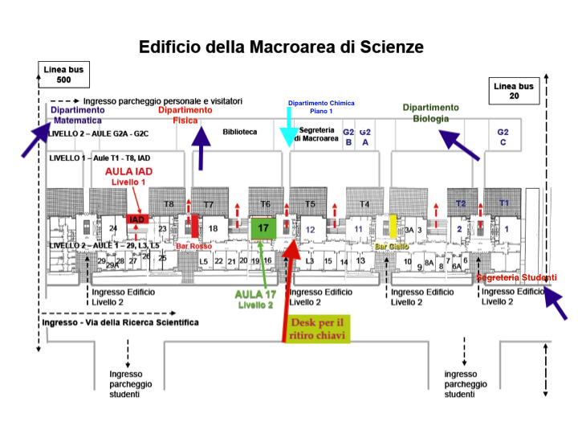

Sogene Searcher
A prototype
Contacts

Orario da Marzo 2022 a Giugno 2022
Biotecnologie
Chimica
Chimica Applicata
Fisica
Matematica (Triennale)
Matematica (Magistrale)
Scienze dei Materiali
Scienze Biologiche
Bioinformatica
Biologia Cellulare e Scienze Biomediche
Biologia Evoluzionistica
Fisica (Magistrale)
Biotechnologies (Magistrale)
Scienze dei Materiali (Magistrale)